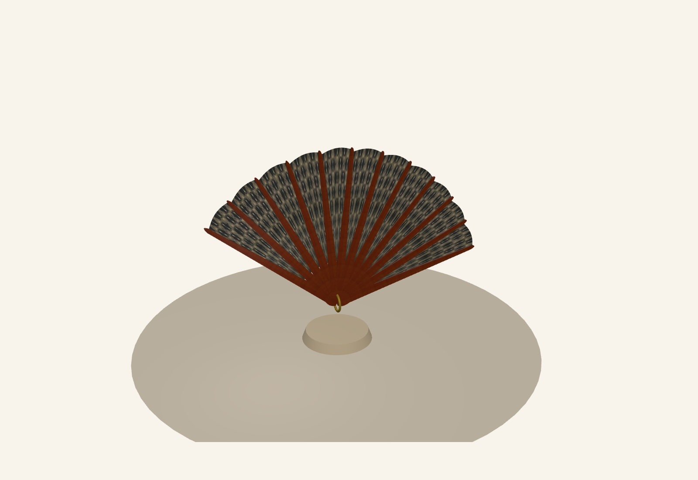
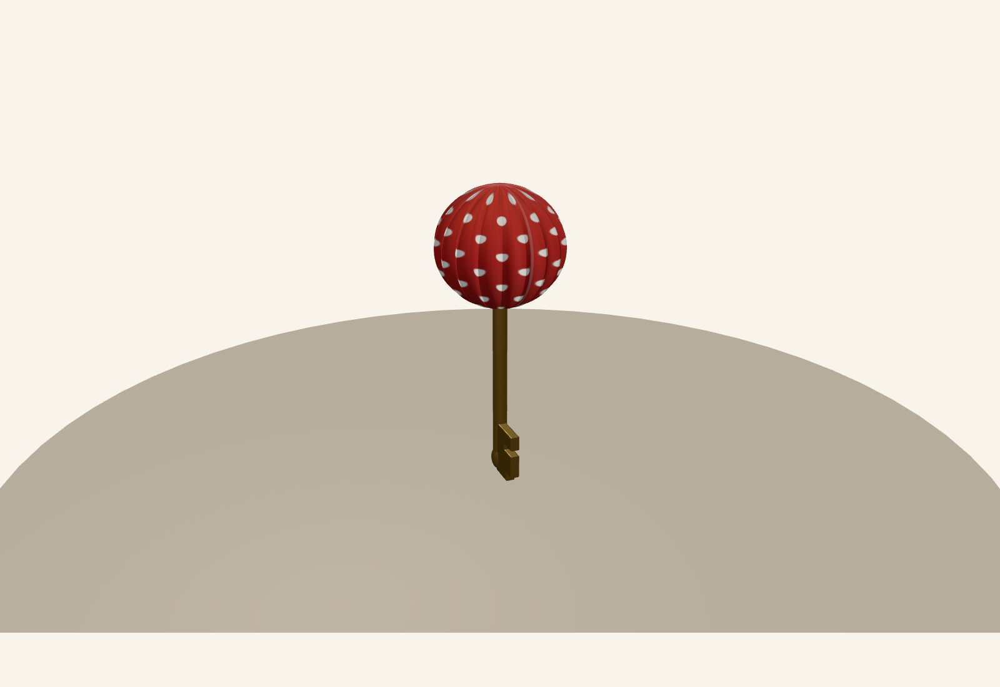
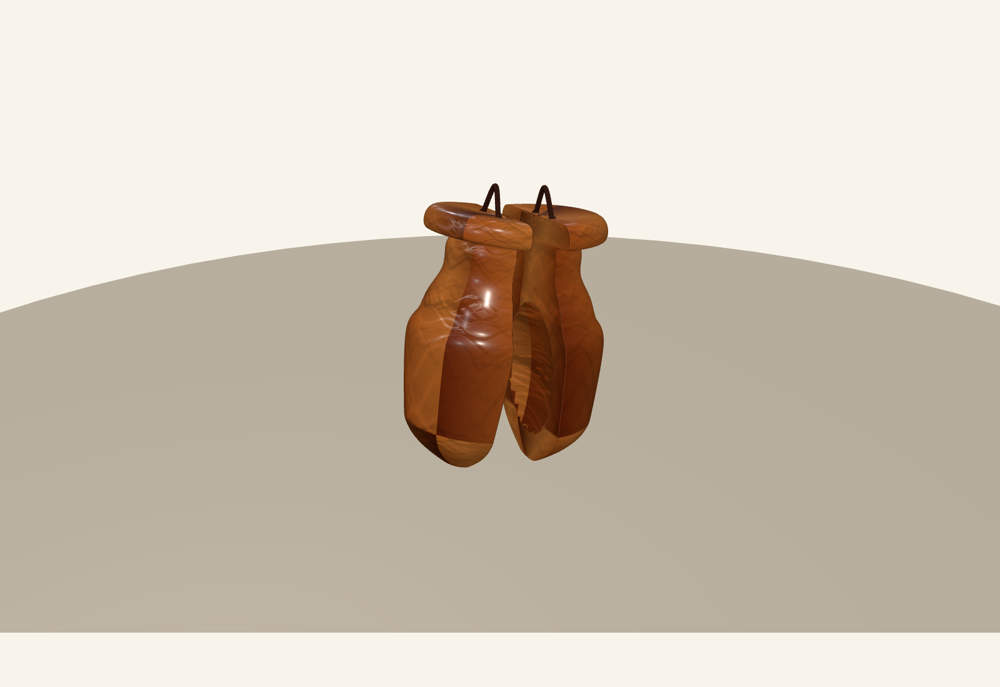
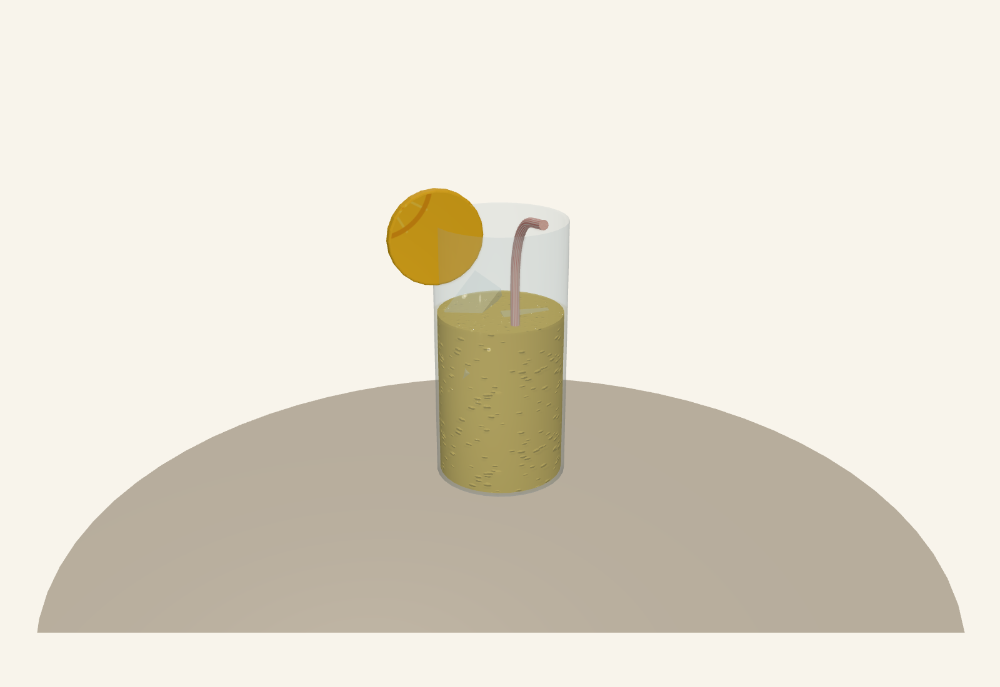

Operación Tarasca
Laberinto de Volantes
Asignatura: Sistemas Gráficos (SG)
Grado en Ingeniería Informática, 2024–2025
# Operación Tarasca: Laberinto de Volantes **Autores:** María Megías Moyano y Martín Hernández Ruiz **Asignatura:** Sistemas Gráficos (SG) **Curso:** 2024–2025
# Operación Tarasca: Laberinto de Volantes **Autores:** María Megías Moyano y Martín Hernández Ruiz **Asignatura:** Sistemas Gráficos (SG) **Curso:** 2024–2025 --- ## 1. Introducción Esta memoria documenta la implementación de un juego 3D interactivo desarrollado en el contexto de la asignatura Sistemas Gráficos (SG) de Ingeniería Informática. La práctica cubre conceptos fundamentales de modelado geométrico, animación, iluminación, cámaras y control de interacción en entornos 3D. ### Temario y herramientas El proyecto integra técnicas vistas a lo largo del curso: - **Geometrías primitivas y transformaciones** (rotación, escala, traslación) - **Modelado avanzado:** revolución, extrusión, barrido y operaciones booleanas (CSG) - **Jerarquía de nodos** para modelado articulado - **Materiales físicos** con texturas, mapas de relieve y transparencia - **Iluminación multisource** (ambiental, direccional, puntual) - **Sistemas de cámaras** (perspectiva y ortográfica) - **Interacción** mediante raycasting, eventos de teclado y ratón - **Animación** por interpolación (TWEEN) y actualización per-frame **Herramientas principales:** - **Three.js** (librería 3D WebGL) - **dat.GUI** (interfaz de control) - **TWEEN.js** (motor de animación) - **CSG/three-bvh-csg** (operaciones booleanas) - **HTML5 Canvas** (texturas procedurales) --- ## 2. Visión General del Proyecto **Operación Tarasca: Laberinto de Volantes** es un juego en primera persona ambientado en una feria tradicional andaluza. El jugador debe explorar un laberinto, recoger cuatro objetos (pick-ups) temáticos y finalmente acceder a la puerta final usando una llave obtenida durante el proceso. ### Objetivo del jugador 1. Navegar por el laberinto en busca de pick-ups dispersos. 2. Recoger los cuatro objetos requeridos. 3. Localizar el pomo de la puerta final. 4. Abrir la puerta (solo posible con todos los pick-ups recogidos). 5. Completar la partida exitosamente. ### Temática y ambiente El escenario recrea la atmósfera de una feria con casetas, adornos andaluces y una progresión de iluminación dinámica que simula la transición del día a la noche a medida que el jugador progresa. Los pick-ups representan elementos festivos: farolillos, abanicos, castañuelas y vasos de rebujito. --- ## 3. Diseño del Laberinto ### Construcción y geometría El laberinto se define mediante un **mapa de texto plano** (`laberinto.txt`) donde cada carácter representa una celda en una rejilla 2D: - `X` indica un muro. - Un espacio en blanco representa una celda transitable. Este enfoque modular permite modificar el diseño del laberinto sin tocar el código 3D. La clase `Laberinto.js` parsea el archivo, construye una matriz interna y genera cubos 3D para cada celda marcada como muro, usando transformaciones locales para posicionarlos correctamente en el espacio mundial. ### Algoritmo de colisiones Se implementó un método de validación de posición **multisample** (`puedeMoverseA`) que comprueba cuatro puntos alrededor del jugador (a una distancia aproximada de `playerRadius`) antes de confirmar un movimiento. Esto simula un volumen cilíndrico para el jugador e impide que atraviese paredes incluso en movimientos diagonales. ```javascript bool puedeMoverseA(position, playerRadius) // Comprueba 4 puntos alrededor de position // Retorna true si TODOS los puntos son traversables ``` Adicionalmente, los pick-ups actúan como obstáculos mientras no hayan sido recogidos, calculando su radio de colisión a partir de la caja envolvente (`Box3`). ### Ubicación de objetos Los pick-ups se posicionan en celdas específicas del mapa mediante la función `posicionarPickup(obj, fila, columna)`. Esta función: 1. Convierte coordenadas de celda a coordenadas mundiales. 2. Escala el objeto para que quepa en el laberinto. 3. Ajusta su altura visual de forma coherente. 4. Calcula y almacena su radio de colisión. --- ## 4. Pick-ups: Implementación Técnica Se han modelado cuatro objetos temáticos, cada uno demostrando técnicas de modelado diferenciadas: ### 4.1 Farolillo (Llave) **Función:** Llave que debloquea la puerta final. **Técnicas de modelado:** - **Revolución:** Geometría cilíndrica de simetría radial (estructura principal del farolillo). - **Extrusión:** Detalles planos (aletas, remaches). - **Operaciones booleanas (CSG):** Talladuras interiores para simular huecos y ornamentación. - **Textura procedural:** Lunares generados por `CanvasTexture` en el canal de color. - **Luz interior:** `PointLight` interna que simula el brillo cálido típico de los farolillos. **Material:** `MeshStandardMaterial` con emisión controlada para resaltar la luz interior bajo sombra. ### 4.2 Abanico Articulado **Función:** Pick-up interactivo con animación continua. **Estructura jerárquica (obligatorio según guion):** - Nodo raíz del abanico como transform principal. - Varillas modeladas por extrusión y colgadas del nodo raíz. - Tela vinculada al sistema de varillas. - Remache como pivote central de rotación. - Dos animaciones principales: oscilación continua y apertura/cierre con TWEEN. **Técnicas:** - **Barrido (Sweep):** Perfiles extruidos a lo largo de trayectorias para las varillas. - **Jerarquía transformacional:** Las rotaciones locales de cada varilla producen movimiento coherente de apertura. - **Animación:** Función seno aplicada al ángulo de apertura para oscilación continua; TWEEN para transiciones suaves. ### 4.3 Castañuelas **Técnicas:** - **Revolución:** Forma base simétrica. - **Extrusión:** Detalles de "orejas" o apéndices. - **CSG:** Sustracción booleana para crear huecos interiores que simulan la unión mecánica entre piezas. - **Cordel:** Extrusión simple que cuelga de cada mitad. **Material:** Madera mediante `MeshStandardMaterial` con mapas de color simulando veteado natural; `roughness` elevado (madera mate). ### 4.4 Vaso de Rebujito **Técnicas:** - **Revolución:** Geometría del vaso/jarra (cuerpo principal). - **Barrido:** Pajita extruida a lo largo de una curva. - **Extrusión:** Rodaja de limón como decoración. **Materiales:** - **Cristal transparente:** `MeshPhysicalMaterial` con `transmission` y `thickness` para simular refracción. - **Líquido animado:** Cilindro translúcido que escala en Y; su posición se reajusta para mantener el nivel visual. - **Hielo:** Cubos con restricciones aproximadas (radio de colisión, confinamiento dentro del vaso). ### 4.5 Capturas de Pick-ups <div class="pickup-grid"> <figure> <p></p> <figcaption>Abanico</figcaption> </figure> <figure> <p></p> <figcaption>Farolillo</figcaption> </figure> <figure> <p></p> <figcaption>Castañuelas</figcaption> </figure> <figure> <p></p> <figcaption>Rebujito</figcaption> </figure> </div> --- ## 5. Sistemas Principales ### 5.1 Movimiento en Primera Persona **Control:** `PointerLockControls` (bloquea el cursor y mapea movimiento del ratón a rotación de cámara). **Teclas de avance/retroceso:** `W` y `S` producen movimiento hacia adelante/atrás en la dirección de mirada. **Algoritmo:** 1. Se obtiene el vector de dirección de la cámara. 2. Se proyecta al plano XZ (anulando componente Y). 3. Se escala por `velocidad * deltaTime`. 4. Se valida la posición destino antes de aplicar. 5. Se permite deslizamiento: movimiento por eje X y Z independientes para esquivar paredes diagonalmente. ### 5.2 Sistemas de Cámaras **Cámara principal:** `PerspectiveCamera` en primera persona, posicionada a altura `playerHeight` desde el terreno. **Cámara superior (Minimapa):** `OrthographicCamera` a 40 unidades de altura, vista cenital del laberinto. Se renderiza en una región rectangular usando `setViewport()` y `setScissor()` sin crear escenas adicionales. Incluye un marcador del jugador (cono amarillo) que se actualiza cada frame y se orienta según la dirección de mirada. ### 5.3 Recogida de Pick-ups Se lanza un `Raycaster` desde: - Centro de pantalla (cuando cursor está bloqueado). - Posición del ratón (cuando cursor está libre tras click derecho). **Condiciones de recogida:** - Distancia ≤ `interactionDistance` (3.0 unidades). - `userData.recogible === true`. - Objeto no ha sido recogido previamente. **Efecto:** El pick-up se marca como `recogido`, se oculta (`visible = false`) y se incrementa el contador HUD. ### 5.4 Apertura de Puerta **Condiciones:** - Todos los pick-ups recogidos (`todosPickupsRecogidos() === true`). - Raycast colisiona con pomo (`doorKnob`). - Distancia a pomo ≤ `interactionDistance`. **Secuencia de animación:** 1. Inserción de llave: TWEEN de posición Z hacia la cerradura. 2. Giro de llave: TWEEN de rotación Z con easing `Quadratic.InOut`. 3. Apertura de hoja: Interpolación de `doorPivot.rotation.y` de 0 a -π×0.55. --- ## 6. Iluminación y Materiales ### Iluminación - **AmbientLight:** Iluminación global constante (0xffffff, intensidad 0.38). - **DirectionalLight:** Luz solar cálida (0xfff4df) que genera sombras, posición dinámica simulando día/noche. - **PointLight (azul):** Contraste cromático (0x5fb7ff, radio 13 unidades). - **DynamicLight:** Luz puntual que cambia de color e intensidad por frame mediante HSL y función seno. ### Materiales - **MeshStandardMaterial:** Material principal físicamente plausible; controla `roughness`, `metalness`, `emissive`. - **MeshPhysicalMaterial:** Para cristal del rebujito; añade `transmission` y `thickness`. - **Texturas procedurales:** Generadas con `CanvasTexture` (lunares del farolillo, texturas de suelo). - **Mapas de relieve:** Simulados con `bumpMap` para mayor detalle visual. --- ## 7. Animaciones - **Abanico:** Oscilación continua (función seno) + apertura/cierre interpolada. - **Castañuelas:** Pivotes gemelos que rotan en direcciones opuestas (apertura y cierre). - **Rebujito (Líquido):** Escala en Y con reposicionamiento de centro para mantener nivel visual. - **Puerta:** Llave (inserción + giro) + hoja (rotación suave con TWEEN). --- ## 8. Manual de Usuario ### Requisitos - Navegador con soporte WebGL (Chrome, Firefox). - Python 3 (para lanzar servidor local). ### Ejecución ```bash cd Operación_Tarasca/ python server-launcher.py # Abrir http://localhost:8000 en navegador ``` ### Controles | Acción | Control | |--------|---------| | Avanzar/Retroceder | W / S | | Mirar | Ratón (movimiento) | | Click | Click izquierdo (recoger, abrir puerta) | | Liberar cursor | Click derecho | | Minimapa | M (toggle) | | Zoom | Rueda del ratón | ### Teclas de depuración (solo para pruebas) - **F:** Teletransportar jugador frente a la puerta. - **P:** Ciclar entre pick-ups (herramienta de prueba). --- ## 9. Resumen de Requisitos Cumplidos | Requisito | Implementación | |-----------|----------------| | 4 Pick-ups | Farolillo, Abanico, Castañuelas, Rebujito | | Llave | Farolillo | | Objeto articulado | Abanico (modelo jerárquico) | | Revolución | Farolillo, Castañuelas, Rebujito | | Extrusión | Farolillo, Abanico, Castañuelas | | Barrido | Abanico, Pajita del Rebujito | | CSG | Farolillo, Castañuelas, Rebujito | | Animación continua | Abanico | | Puerta animada | Llave + Hoja | | Cámara 1ª persona | PointerLockControls | | Cámara superior | Minimapa (Orthographic) | | Materiales color | MeshStandardMaterial | | Materiales textura | CanvasTexture, texturas importadas | | Mapa de relieve | bumpMap procedural | | Luces dinámicas | Color e intensidad variables | | Recogida pick-ups | Raycaster + distancia | | Puerta condicionada | Requiere todos los pick-ups | --- ## 10. Conclusiones El proyecto integra satisfactoriamente conceptos centrales de gráficos 3D en tiempo real: geometría procedimental, jerarquías de transformación, materiales físicamente plausibles e iluminación dinámica. La arquitectura modular facilita mantenimiento y extensión; el diseño centrado en el usuario (control intuitivo, feedback visual claro) proporciona una experiencia coherente y profesional. **Líneas futuras:** Física de cuerpos rígidos (para hielo realista), generación procedural de laberintos, multijugador, y mejora gráfica mediante shaders personalizados. --- ### Referencias - Three.js Official Documentation - dat.gui Library - TWEEN.js Animation Library - three-bvh-csg (Boolean CSG Operations)